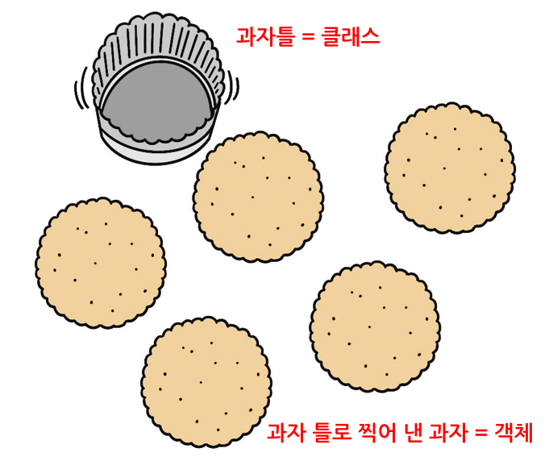
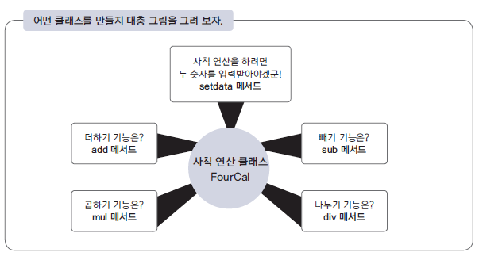
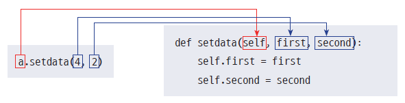
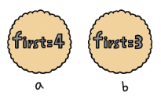
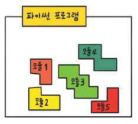

# calculator.py
result = 0
def add(num):
global result
result += num # 결괏값(result)에 입력값(num) 더하기
return result # 결괏값 리턴
print(add(3))
print(add(4))3
7이번 실습에서는 프로그램 클래스, 모듈에 대한 기초에 대해서 학습 할 예정이다. 위성자료 및 지구환경과학 자료처리를 위한 필수 프로그래밍 코드 학습 과정이다.
모든 런타임 재설정 이 뜰 텐데 예를 눌러준다.쉽게 실행보는법을 따라왔다면 Colab에서 임시 노트북으로 열리기 때문에 파일->드라이브로 저장을 눌러서 여러분의 구글 드라이브에 저장하거나 파일 -> .ipynb 다운로드를 눌러서 다운로드 해준다.
블록지정 ctrl + / : 여러줄 주석처리
다중 블럭 들여쓰기: 블록지정, Tab
다중 블럭 내어쓰기: 블록지정, Tab + shift
프로그래머들이 가장 많이 사용하는 프로그래밍 언어 중 하나인 C 언어에는 클래스가 없다.
이 말은 굳이 클래스가 없어도 프로그램을 충분히 만들 수 있다는 뜻이다.
파이썬으로 잘 만든 프로그램을 살펴봐도 클래스를 사용하지 않고 작성한 것이 매우 많다.
즉, 클래스는 지금까지 공부한 함수나 자료형처럼 프로그램 작성을 위해 꼭 필요한 요소는 아니다.
하지만 프로그램을 작성할 때 클래스를 적재적소에 사용하면 프로그래머가 얻을 수 있는 이익은 많다.
여러분 모두 계산기를 사용해 보았을 것이다.
계산기에 숫자 3을 입력하고 +를 입력한 후 4를 입력하면 결괏값으로 7을 보여 준다.
다시 한번 +를 입력한 후 3을 입력하면 기존 결괏값 7에 3을 더해 10을 보여 준다.
즉, 계산기는 이전에 계산한 결괏값을 항상 메모리 어딘가에 저장하고 있어야 한다.

계산기는 이전에 계산한 결괏값을 기억하고 있어야 한다.
이런 내용을 우리가 앞에서 익힌 함수를 이용해 구현해 보자.
계산기의 더하기 기능을 구현한 파이썬 코드는 다음과 같다.
# calculator.py
result = 0
def add(num):
global result
result += num # 결괏값(result)에 입력값(num) 더하기
return result # 결괏값 리턴
print(add(3))
print(add(4))3
7입력값을 이전에 계산한 결괏값에 더한 후 리턴하는 add 함수를 위와 같이 작성했다.
이전에 계산한 결괏값을 유지하기 위해서 result 전역 변수(global)를 사용했다.
프로그램을 실행하면 예상한 대로 다음과 같은 결괏값이 출력된다.
3
7
그런데 만일 한 프로그램에서 2대의 계산기가 필요한 상황이 발생하면 어떻게 해야 할까?
각 계산기는 각각의 결괏값을 유지해야 하므로 위와 같이 add 함수 하나만으로는 결괏값을 따로 유지할 수 없다.
이런 상황을 해결하려면 다음과 같이 함수를 각각 따로 만들어야 한다.
# calculator2.py
result1 = 0
result2 = 0
def add1(num): # 계산기1
global result1
result1 += num
return result1
def add2(num): # 계산기2
global result2
result2 += num
return result2
print(add1(3))
print(add1(4))
print(add2(3))
print(add2(7))3
7
3
10똑같은 일을 하는 add1과 add2 함수를 만들고
각 함수에서 계산한 결괏값을 유지하면서 저장하는 전역 변수 result1과 result2를 정의했다.
결괏값은 다음과 같이 의도한 대로 출력된다.
3
7
3
10
계산기 1의 결괏값이 계산기 2에 아무런 영향을 끼치지 않는다는 것을 확인할 수 있다.
하지만 계산기가 3개, 5개, 10개로 점점 더 많이 필요해진다면 어떻게 해야 할까?
그때마다 전역 변수와 함수를 추가할 것인가?
여기에 계산기마다 빼기나 곱하기와 같은 기능을 추가해야 한다면 상황은 점점 더 어려워질 것이다.
아직 클래스에 대해 배우지 않았지만, 위와 같은 경우에 클래스를 사용하면 다음과 같이 간단하게 해결할 수 있다.
# calculator3.py
class Calculator:
def __init__(self):
self.result = 0
def add(self, num):
self.result += num
return self.result
cal1 = Calculator()
cal2 = Calculator()
print(cal1.add(3))
print(cal1.add(4))
print(cal2.add(3))
print(cal2.add(7))3
7
3
10프로그램을 실행하면 함수 2개를 사용했을 때와 동일한 결과가 출력된다.
Calculator 클래스로 만든 별개의 계산기 cal1, cal2(파이썬에서는 이것을 ‘객체’라고 부른다)가 각각의 역할을 수행한다.
그리고 계산기의 결괏값 역시 다른 계산기의 결괏값과 상관없이 독립적인 값을 유지한다.
이렇게 클래스를 사용하면 계산기 대수가 늘어나도 객체를 생성하면 되므로 함수만 사용할 때보다 간단하게 프로그램을 작성할 수 있다.
빼기 기능을 더하고 싶다면 Calculator 클래스에 다음과 같이 빼기 기능을 가진 함수를 추가하면 된다.
class Calculator:
def __init__(self):
self.result = 0
def add(self, num):
self.result += num
return self.result
def sub(self, num):
self.result -= num
return self.resultcal1 = Calculator()
print(cal1.add(3))
print(cal1.sub(2))3
1클래스를 가장 잘 설명해 주는 다음 그림을 살펴보자.
과자를 만드는 과자 틀과 이를 사용해 만든 과자이다.

여기에서 설명할 클래스는 과자 틀과 비슷하다.
클래스(class)란 똑같은 무언가를 계속 만들어 낼 수 있는 설계 도면(과자 틀),
객체(object)란 클래스로 만든 피조물(과자 틀로 찍어 낸 과자)을 뜻한다.
클래스로 만든 객체에는 중요한 특징이 있다.
바로 객체마다 고유한 성격을 가진다는 것이다.
과자 틀로 만든 과자에 구멍을 뚫거나 조금 베어 먹더라도 다른 과자에는 아무런 영향이 없는 것과 마찬가지로 동일한 클래스로 만든 객체들은 서로 전혀 영향을 주지 않는다.
다음은 파이썬 클래스의 가장 간단한 예이다.
class Cookie:
pass위에서 작성한 Cookie 클래스는 아무런 기능도 가지고 있지 않은 껍질뿐인 클래스이다.
하지만 이렇게 껍질뿐인 클래스도 객체를 생성하는 기능이 있다.
과자 틀로 과자를 만드는 것처럼 말이다.
객체는 클래스로 만들고 1개의 클래스는 무수히 많은 객체를 만들어 낼 수 있다.
위에서 만든 Cookie 클래스의 객체를 만드는 방법은 다음과 같다.
a = Cookie()
b = Cookie()Cookie()의 결괏값을 리턴받은 a와 b가 바로 객체이다.
마치 함수를 사용해서 그 결괏값을 리턴받는 모습과 비슷하다.
객체와 인스턴스(instance)의 차이클래스로 만든 객체를 인스턴스라고도 한다.
그렇다면 객체와 인스턴스의 차이는 무엇일까?
이렇게 생각해 보자.
a = Cookie( )로 만든 a는 객체이다.
그리고 a 객체는 Cookie의 인스턴스이다.
즉, 인스턴스라는 말은 특정 객체(a)가 어떤 클래스(Cookie)의 객체인지를 관계 위주로 설명할 때 사용한다.
‘a는 인스턴스’보다 ‘a는 객체’라는 표현이 어울리며‘a는 Cookie의 객체’보다 ‘a는 Cookie의 인스턴스’라는 표현이 훨씬 잘 어울린다.백견(百見)이 불여일타(一打)라고 했다.
클래스를 직접 만들며 배워 보자.
여기에서는 사칙 연산을 하는 클래스를 만들어 볼 것이다.
사칙 연산은 더하기, 빼기, 곱하기, 나누기를 말한다.
클래스는 무작정 만드는 것보다 클래스로 만든 객체를 중심으로 어떤 식으로 동작하게 할지 미리 구상한 후 생각한 것을 하나씩 만들면서 완성해 나가는 것이 좋다.

그러면 지금부터 앞에서 구상한 것처럼 동작하는 클래스를 만들어 보자.
제일 먼저 할 일은 a = FourCal()처럼 객체를 만들 수 있게 하는 것이다.
일단은 아무런 기능이 없어도 되기 때문에 매우 간단하게 만들 수 있다.
다음을 따라 해 보자.
class FourCal:
pass먼저 대화형 인터프리터에서 pass라는 문장만을 포함한 FourCal 클래스를 만든다.
현재 상태에서 FourCal 클래스는 아무 변수나 함수도 포함하지 않지만, 우리가 원하는 객체 a를 만들 수 있는 기능은 가지고 있다.
한번 확인해 보자.
a = FourCal()
type(a)__main__.FourCal위와 같이 a = FourCal()로 a 객체를 먼저 만든 후 type(a)로 a 객체가 어떤 타입인지 알아보았다.
역시 객체 a가 FourCal 클래스의 인스턴스라는 것을 알 수 있다.
하지만 생성된 객체 a는 아직 아무런 기능도 하지 못한다.
이제 더하기, 빼기, 곱하기, 나누기 등의 기능을 하는 객체를 만들어야 한다.
그런데 이러한 기능을 갖춘 객체를 만들려면 먼저 사칙 연산을 할 때 사용할 2개의 숫자를 a 객체에게 알려 주어야 한다.
다음과 같이 연산을 수행할 대상(4, 2)을 객체에 지정할 수 있게 만들어 보자.
위 문장이 동작하려면 다음과 같이 FourCal 클래스를 다시 정의해야 한다.
class FourCal:
def setdata(self, first, second):
self.first = first
self.second = second앞에서 만든 FourCal 클래스에서 pass 문장을 삭제하고 그 대신 setdata 함수를 정의했다.
클래스 안에 구현된 함수는 다른 말로 메서드(method)라고 부른다.
앞으로 클래스 내부의 함수는 항상 메서드라고 표현할 테니 메서드라는 용어를 기억해 두자.
일반적인 함수를 만들 때는 다음과 같이 소스 코드를 작성한다.
def 함수_이름(매개변수):
수행할_문장
...메서드도 클래스에 포함되어 있다는 점만 제외하면 일반 함수와 다를 것이 없다.
setdata 메서드를 다시 보면 다음과 같다.
def setdata(self, first, second): # 메서드의 매개변수
self.first = first # 메서드의 수행문
self.second = second # 메서드의 수행문setdata 메서드를 좀 더 자세히 살펴보자.
setdata 메서드는 매개변수로 self, first, second 3개의 입력값을 받는다.
그런데 일반 함수와 달리, 메서드의 첫 번째 매개변수 self는 특별한 의미를 가진다.
다음과 같이 a 객체를 만들고 a 객체를 통해 setdata 메서드를 호출해 보자.
a = FourCal()
a.setdata(4, 2)객체를 이용해 클래스의 메서드를 호출하려면 a.setdata(4, 2)와 같이 '도트(.)' 연산자를 사용하면 된다.그런데 뭔가 좀 이상하지 않은가?
setdata 메서드에는 self, first, second 총 3개의 매개변수가 필요한데 실제로는 a.setdata(4, 2)처럼 2개의 값만 전달했다.
왜 그럴까?
a.setdata(4, 2)처럼 호출하면 setdata 메서드의 첫 번째 매개변수 self에는 setdata 메서드를 호출한 객체 a가 자동으로 전달되기 때문이다.
다음 그림을 보면 객체를 호출할 때 입력한 값이 메서드에 어떻게 전달되는지 쉽게 이해할 수 있을 것이다.

파이썬 메서드의 첫 번째 매개변수 이름은 관례적으로 self를 사용한다.
객체를 호출할 때 호출한 객체 자신이 전달되기 때문에 self라는 이름을 사용한 것이다.
물론 self말고 다른 이름을 사용해도 상관없다.
메서드의 첫 번째 매개변수 self를 명시적으로 구현하는 것은 파이썬만의 독특한 특징이다.
예를 들어 자바와 같은 언어는 첫 번째 매개변수 self가 필요없다.
잘 사용하지는 않지만, 다음과 같이 클래스를 이용해 메서드를 호출할 수도 있다.
a = FourCal() FourCal.setdata(a, 4, 2)
위와 같이 클래스명.메서드 형태로 호출할 때는 객체 a를 첫 번째 매개변수 self에 꼭 전달해야 한다.
반면 다음처럼 객체.메서드 형태로 호출할 때는 self를 반드시 생략해서 호출해야 한다.
a = FourCal()
a.setdata(4, 2)이제 setdata 메서드의 수행문에 대해 알아보자.
def setdata(self, first, second): # 메서드의 매개변수
self.first = first # 메서드의 수행문
self.second = second # 메서드의 수행문a.setdata(4, 2)처럼 호출하면 setdata 메서드의 매개변수 first, second에는 각각 값 4와 2가 전달되어
setdata 메서드의 수행문이 다음과 같이 해석된다.
self.first = 4
self.second = 2self는 전달된 객체 a이므로 다시 다음과 같이 해석된다.
a.first = 4
a.second = 2a.first = 4라는 문장이 수행되면 a 객체에 객체변수 first가 생성되고 4라는 값이 저장된다.
이와 마찬가지로 a.second = 2라는 문장이 수행되면 a 객체에 객체변수 second가 생성되고 2라는 값이 저장된다.
객체에 생성되는 객체만의 변수를 ‘객체변수’ 또는 ‘속성’이라고 부른다.
다음과 같이 확인해 보자.
a = FourCal()
a.setdata(4, 2)a.first4a.second2a 객체에 객체변수 first와 second가 생성된 것을 확인할 수 있다.
이번에는 다음과 같이 a, b 객체를 만들어 보자.
a = FourCal()
b = FourCal()그리고 a 객체의 객체변수 first를 다음과 같이 생성한다.
a.setdata(4, 2)
a.first4이번에는 b 객체의 객체변수 first를 다음과 같이 생성한다.
b.setdata(3, 7)
b.first3자, 이제 여러분에게 매우 중요한 질문을 1가지 하겠다.
위와 같이 진행하면 b 객체의 객체변수 first에는 값 3이 저장된다는 것을 확인할 수 있었다.
그렇다면
a 객체의 first에 저장된 값도 3으로 변할까, 아니면 원래대로 값 4를 유지할까?
a.firsta 객체의 first 값은 b 객체의 first 값에 영향받지 않고 원래 값을 유지하고 있다는 것을 확인할 수 있다.
이 예제를 통해 강조하고 싶은 점이 바로 이것이다.
클래스로 만든 객체의 객체변수는 다른 객체의 객체변수에 상관없이 독립적인 값을 유지한다.
클래스에서는 이 부분을 이해하는 것이 가장 중요하다.

다음은 현재까지 완성된 FourCal 클래스이다.
class FourCal:
def setdata(self, first, second):
self.first = first
self.second = second지금까지 살펴본 내용이 바로 이 4줄의 소스 코드를 설명하기 위한 것이었다.
자! 2개의 숫자 값을 설정해 주었으므로 2개의 숫자를 더하는 기능을 방금 만든 클래스에 추가해 보자.
우리는 다음과 같이 더하기 기능을 갖춘 클래스를 만들어야 한다.
#a = FourCal()
#a.setdata(4, 2)
#a.add()
#6이 연산이 가능하도록 FourCal 클래스를 다시 작성해 보자.
class FourCal:
def setdata(self, first, second):
self.first = first
self.second = second
def add(self):
result = self.first + self.second
return resultadd 메서드를 새롭게 추가했다.
이제 클래스를 사용해 보자.
a = FourCal()
a.setdata(4, 2)위와 같이 호출하면 앞에서 살펴보았듯이 a 객체의 first, second 객체변수에는 각각 값 4와 2가 저장될 것이다.
이제 add 메서드를 호출해 보자.
a.add()6a.add()라고 호출하면 add 메서드가 호출되어 값 6이 출력될 것이다.
어떤 과정을 거쳐 값 6이 출력되는지 add 메서드를 따로 떼어 내 자세히 살펴보자.
def add(self):
result = self.first + self.second
return resultadd 메서드의 매개변수는 self, 리턴값은 result이다.
리턴값인 result를 계산하는 부분은 다음과 같다.
result = self.first + self.seconda.add()와 같이 a 객체에 의해 add 메서드가 수행되면 add 메서드의 self에는 객체 a가 자동으로 입력되므로 이 내용은 다음과 같이 해석된다.
result = a.first + a.seconda.first와 a.second는 add 메서드가 호출되기 전에 a.setdata(4, 2) 문장에서 a.first = 4, a.second = 2로 설정된다.
따라서 위 문장은 다시 다음과 같이 해석된다.
result = 4 + 2따라서 다음과 같이 a.add()를 호출하면 6을 리턴한다.
a.add()6이번에는 곱하기, 빼기, 나누기 등을 할 수 있도록 프로그램을 개선해 보자.
class FourCal:
def setdata(self, first, second):
self.first = first
self.second = second
def add(self):
result = self.first + self.second
return result
def mul(self):
result = self.first * self.second
return result
def sub(self):
result = self.first - self.second
return result
def div(self):
result = self.first / self.second
return result정말 모든 것이 제대로 동작하는지 확인해 보자.
a = FourCal()
b = FourCal()
a.setdata(4, 2)
b.setdata(3, 8)# 직접 한번 곱하기, 빼기, 나누기를 해보세요.
a.add()
6지금까지 우리가 목표로 한 사칙 연산 기능을 가진 클래스를 만들어 보았다.
생성자이번에는 우리가 만든 FourCal 클래스를 다음과 같이 사용해 보자.
a = FourCal()
a.add()--------------------------------------------------------------------------- AttributeError Traceback (most recent call last) z:\yeomjm\교육\강의자료\학부\위성영상처리및실습_2_2\강의자료\5장_파이썬기초_V_클래스\위성영상처리_파이썬기초_05.ipynb 셀 115 line 2 <a href='vscode-notebook-cell:/z%3A/yeomjm/%EA%B5%90%EC%9C%A1/%EA%B0%95%EC%9D%98%EC%9E%90%EB%A3%8C/%ED%95%99%EB%B6%80/%EC%9C%84%EC%84%B1%EC%98%81%EC%83%81%EC%B2%98%EB%A6%AC%EB%B0%8F%EC%8B%A4%EC%8A%B5_2_2/%EA%B0%95%EC%9D%98%EC%9E%90%EB%A3%8C/5%EC%9E%A5_%ED%8C%8C%EC%9D%B4%EC%8D%AC%EA%B8%B0%EC%B4%88_V_%ED%81%B4%EB%9E%98%EC%8A%A4/%EC%9C%84%EC%84%B1%EC%98%81%EC%83%81%EC%B2%98%EB%A6%AC_%ED%8C%8C%EC%9D%B4%EC%8D%AC%EA%B8%B0%EC%B4%88_05.ipynb#Y222sZmlsZQ%3D%3D?line=0'>1</a> a = FourCal() ----> <a href='vscode-notebook-cell:/z%3A/yeomjm/%EA%B5%90%EC%9C%A1/%EA%B0%95%EC%9D%98%EC%9E%90%EB%A3%8C/%ED%95%99%EB%B6%80/%EC%9C%84%EC%84%B1%EC%98%81%EC%83%81%EC%B2%98%EB%A6%AC%EB%B0%8F%EC%8B%A4%EC%8A%B5_2_2/%EA%B0%95%EC%9D%98%EC%9E%90%EB%A3%8C/5%EC%9E%A5_%ED%8C%8C%EC%9D%B4%EC%8D%AC%EA%B8%B0%EC%B4%88_V_%ED%81%B4%EB%9E%98%EC%8A%A4/%EC%9C%84%EC%84%B1%EC%98%81%EC%83%81%EC%B2%98%EB%A6%AC_%ED%8C%8C%EC%9D%B4%EC%8D%AC%EA%B8%B0%EC%B4%88_05.ipynb#Y222sZmlsZQ%3D%3D?line=1'>2</a> a.add() z:\yeomjm\교육\강의자료\학부\위성영상처리및실습_2_2\강의자료\5장_파이썬기초_V_클래스\위성영상처리_파이썬기초_05.ipynb 셀 115 line 6 <a href='vscode-notebook-cell:/z%3A/yeomjm/%EA%B5%90%EC%9C%A1/%EA%B0%95%EC%9D%98%EC%9E%90%EB%A3%8C/%ED%95%99%EB%B6%80/%EC%9C%84%EC%84%B1%EC%98%81%EC%83%81%EC%B2%98%EB%A6%AC%EB%B0%8F%EC%8B%A4%EC%8A%B5_2_2/%EA%B0%95%EC%9D%98%EC%9E%90%EB%A3%8C/5%EC%9E%A5_%ED%8C%8C%EC%9D%B4%EC%8D%AC%EA%B8%B0%EC%B4%88_V_%ED%81%B4%EB%9E%98%EC%8A%A4/%EC%9C%84%EC%84%B1%EC%98%81%EC%83%81%EC%B2%98%EB%A6%AC_%ED%8C%8C%EC%9D%B4%EC%8D%AC%EA%B8%B0%EC%B4%88_05.ipynb#Y222sZmlsZQ%3D%3D?line=4'>5</a> def add(self): ----> <a href='vscode-notebook-cell:/z%3A/yeomjm/%EA%B5%90%EC%9C%A1/%EA%B0%95%EC%9D%98%EC%9E%90%EB%A3%8C/%ED%95%99%EB%B6%80/%EC%9C%84%EC%84%B1%EC%98%81%EC%83%81%EC%B2%98%EB%A6%AC%EB%B0%8F%EC%8B%A4%EC%8A%B5_2_2/%EA%B0%95%EC%9D%98%EC%9E%90%EB%A3%8C/5%EC%9E%A5_%ED%8C%8C%EC%9D%B4%EC%8D%AC%EA%B8%B0%EC%B4%88_V_%ED%81%B4%EB%9E%98%EC%8A%A4/%EC%9C%84%EC%84%B1%EC%98%81%EC%83%81%EC%B2%98%EB%A6%AC_%ED%8C%8C%EC%9D%B4%EC%8D%AC%EA%B8%B0%EC%B4%88_05.ipynb#Y222sZmlsZQ%3D%3D?line=5'>6</a> result = self.first + self.second <a href='vscode-notebook-cell:/z%3A/yeomjm/%EA%B5%90%EC%9C%A1/%EA%B0%95%EC%9D%98%EC%9E%90%EB%A3%8C/%ED%95%99%EB%B6%80/%EC%9C%84%EC%84%B1%EC%98%81%EC%83%81%EC%B2%98%EB%A6%AC%EB%B0%8F%EC%8B%A4%EC%8A%B5_2_2/%EA%B0%95%EC%9D%98%EC%9E%90%EB%A3%8C/5%EC%9E%A5_%ED%8C%8C%EC%9D%B4%EC%8D%AC%EA%B8%B0%EC%B4%88_V_%ED%81%B4%EB%9E%98%EC%8A%A4/%EC%9C%84%EC%84%B1%EC%98%81%EC%83%81%EC%B2%98%EB%A6%AC_%ED%8C%8C%EC%9D%B4%EC%8D%AC%EA%B8%B0%EC%B4%88_05.ipynb#Y222sZmlsZQ%3D%3D?line=6'>7</a> return result AttributeError: 'FourCal' object has no attribute 'first'
FourCal 클래스의 인스턴스 a에 setdata 메서드를 수행하지 않고 add 메서드를 먼저 수행하면
‘AttributeError: ’FourCal’ object has no attribute ‘first’’오류가 발생한다.
setdata 메서드를 수행해야 객체 a의 객체변수 first와 second가 생성되기 때문이다.
이렇게 객체에 first, second와 같은 초깃값을 설정해야 할 필요가 있을 때는
setdata와 같은 메서드를 호출하여 초깃값을 설정하기보다 생성자를 구현하는 것이 안전한 방법이다.
생성자(constructor)란 객체가 생성될 때 자동으로 호출되는 메서드를 의미한다.파이썬 메서드명으로 __init__를 사용하면 이 메서드는 생성자가 된다.
다음과 같이 FourCal 클래스에 생성자를 추가해 보자.
class FourCal:
def __init__(self, first, second):
self.first = first
self.second = second
def setdata(self, first, second):
self.first = first
self.second = second
def add(self):
result = self.first + self.second
return result
def mul(self):
result = self.first * self.second
return result
def sub(self):
result = self.first - self.second
return result
def div(self):
result = self.first / self.second
return result새롭게 추가된 생성자 __init__ 메서드만 따로 떼어 내서 살펴보자.
def __init__(self, first, second):
self.first = first
self.second = second__init__ 메서드는 setdata 메서드와 이름만 다르고 모든 게 동일하다.
단, 메서드 이름을 __init__로 했기 때문에 생성자로 인식되어 객체가 생성되는 시점에 자동으로 호출된다는 차이가 있다.
이제 다음처럼 a 객체를 생성해 보자.
a = FourCal()--------------------------------------------------------------------------- TypeError Traceback (most recent call last) z:\yeomjm\교육\강의자료\학부\위성영상처리및실습_2_2\강의자료\5장_파이썬기초_V_클래스\위성영상처리_파이썬기초_05.ipynb 셀 124 line 1 ----> <a href='vscode-notebook-cell:/z%3A/yeomjm/%EA%B5%90%EC%9C%A1/%EA%B0%95%EC%9D%98%EC%9E%90%EB%A3%8C/%ED%95%99%EB%B6%80/%EC%9C%84%EC%84%B1%EC%98%81%EC%83%81%EC%B2%98%EB%A6%AC%EB%B0%8F%EC%8B%A4%EC%8A%B5_2_2/%EA%B0%95%EC%9D%98%EC%9E%90%EB%A3%8C/5%EC%9E%A5_%ED%8C%8C%EC%9D%B4%EC%8D%AC%EA%B8%B0%EC%B4%88_V_%ED%81%B4%EB%9E%98%EC%8A%A4/%EC%9C%84%EC%84%B1%EC%98%81%EC%83%81%EC%B2%98%EB%A6%AC_%ED%8C%8C%EC%9D%B4%EC%8D%AC%EA%B8%B0%EC%B4%88_05.ipynb#Z1156sZmlsZQ%3D%3D?line=0'>1</a> a = FourCal() TypeError: FourCal.__init__() missing 2 required positional arguments: 'first' and 'second'
a = FourCal()을 수행할 때 생성자 __init__가 호출되어 위와 같은 오류가 발생했다.
오류가 발생한 이유는 생성자의 매개변수 first와 second에 해당하는 값이 전달되지 않았기 때문이다.
위와 같이 수행하면 __init__ 메서드의 매개변수에는 각각 다음과 같은 값이 전달된다.
| 매개변수 | 값 |
|---|---|
| self | 생성되는 객체 |
| first | 4 |
| second | 2 |
__init__ 메서드도 다른 메서드와 마찬가지로 첫 번째 매개변수 self에 생성되는 객체가 자동으로 전달된다는 점을 기억하자.따라서 __init__ 메서드가 호출되면 setdata 메서드를 호출했을 때와 마찬가지로 first와 second라는 객체변수가 생성될 것이다.
다음과 같이 객체변수의 값을 확인해 보자.
a = FourCal(4, 2)
a.first4a.second# add나 div 등과 같은 메서드도 잘 동작하는지 확인해 보자.상속(Inheritance)이란 ’물려받다’라는 뜻으로, ’재산을 상속받다’라고 할 때의 상속과 같은 의미이다.
클래스에도 이 개념을 적용할 수 있다.
어떤 클래스를 만들 때 다른 클래스의 기능을 물려받을 수 있게 만드는 것이다.
이번에는 상속 개념을 사용하여 우리가 만든 FourCal 클래스에 ab 값을 구할 수 있는 기능을 추가해 보자.
앞에서 FourCal 클래스는 이미 만들어 놓았으므로 FourCal 클래스를 상속하는 MoreFourCal 클래스는 다음과 같이 간단하게 만들 수 있다.
class MoreFourCal(FourCal):
pass클래스를 상속하기 위해서는 다음처럼 클래스 이름 뒤 괄호 안에 상속할 클래스 이름을 넣어주면 된다.
class 클래스_이름(상속할_클래스_이름)MoreFourCal 클래스는 FourCal 클래스를 상속했으므로 FourCal 클래스의 모든 기능을 사용할 수 있다.a = MoreFourCal(4, 2)a.add()6a.mul()a.sub()a.div()상속받은 FourCal 클래스의 기능을 모두 사용할 수 있다는 것을 확인할 수 있다.
보통 상속은 기존 클래스를 변경하지 않고 기능을 추가하거나 기존 기능을 변경하려고 할 때 사용한다.
클래스에 기능을 추가하고 싶으면 기존 클래스를 수정하면 되는데 왜 굳이 상속을 받아서 처리해야 하지?라는 의문이 들 수도 있다.
하지만 기존 클래스가 라이브러리 형태로 제공되거나 수정이 허용되지 않는 상황이라면 상속을 사용해야 한다.
이제 원래 목적인 ab 을 계산하는 MoreFourCal 클래스를 만들어 보자.
class MoreFourCal(FourCal):
def pow(self):
result = self.first ** self.second
return resultpass 문장은 삭제하고 위와 같이 두 수의 거듭제곱을 구할 수 있는 pow 메서드를 추가했다.
그리고 다음과 같이 pow 메서드를 수행해 보자.
a = MoreFourCal(4, 2)
a.pow()16MoreFourCal 클래스로 만든 a 객체에 값 4와 2를 지정한 후
pow 메서드를 호출하면 4의 2제곱(42)인 16을 리턴하는 것을 확인할 수 있다.
상속받은 기능인 add 메서드도 잘 동작한다.
상속은 MoreFourCal 클래스처럼 기존 클래스(FourCal)는 그대로 놔둔 채 클래스의 기능을 확장할 때 주로 사용한다.
이번에는 FourCal 클래스를 다음과 같이 실행해 보자.
a = FourCal(4, 0)
a.div()--------------------------------------------------------------------------- ZeroDivisionError Traceback (most recent call last) z:\yeomjm\교육\강의자료\학부\위성영상처리및실습_2_2\강의자료\5장_파이썬기초_V_클래스\위성영상처리_파이썬기초_05.ipynb 셀 154 line 2 <a href='vscode-notebook-cell:/z%3A/yeomjm/%EA%B5%90%EC%9C%A1/%EA%B0%95%EC%9D%98%EC%9E%90%EB%A3%8C/%ED%95%99%EB%B6%80/%EC%9C%84%EC%84%B1%EC%98%81%EC%83%81%EC%B2%98%EB%A6%AC%EB%B0%8F%EC%8B%A4%EC%8A%B5_2_2/%EA%B0%95%EC%9D%98%EC%9E%90%EB%A3%8C/5%EC%9E%A5_%ED%8C%8C%EC%9D%B4%EC%8D%AC%EA%B8%B0%EC%B4%88_V_%ED%81%B4%EB%9E%98%EC%8A%A4/%EC%9C%84%EC%84%B1%EC%98%81%EC%83%81%EC%B2%98%EB%A6%AC_%ED%8C%8C%EC%9D%B4%EC%8D%AC%EA%B8%B0%EC%B4%88_05.ipynb#Z1262sZmlsZQ%3D%3D?line=0'>1</a> a = FourCal(4, 0) ----> <a href='vscode-notebook-cell:/z%3A/yeomjm/%EA%B5%90%EC%9C%A1/%EA%B0%95%EC%9D%98%EC%9E%90%EB%A3%8C/%ED%95%99%EB%B6%80/%EC%9C%84%EC%84%B1%EC%98%81%EC%83%81%EC%B2%98%EB%A6%AC%EB%B0%8F%EC%8B%A4%EC%8A%B5_2_2/%EA%B0%95%EC%9D%98%EC%9E%90%EB%A3%8C/5%EC%9E%A5_%ED%8C%8C%EC%9D%B4%EC%8D%AC%EA%B8%B0%EC%B4%88_V_%ED%81%B4%EB%9E%98%EC%8A%A4/%EC%9C%84%EC%84%B1%EC%98%81%EC%83%81%EC%B2%98%EB%A6%AC_%ED%8C%8C%EC%9D%B4%EC%8D%AC%EA%B8%B0%EC%B4%88_05.ipynb#Z1262sZmlsZQ%3D%3D?line=1'>2</a> a.div() z:\yeomjm\교육\강의자료\학부\위성영상처리및실습_2_2\강의자료\5장_파이썬기초_V_클래스\위성영상처리_파이썬기초_05.ipynb 셀 154 line 1 <a href='vscode-notebook-cell:/z%3A/yeomjm/%EA%B5%90%EC%9C%A1/%EA%B0%95%EC%9D%98%EC%9E%90%EB%A3%8C/%ED%95%99%EB%B6%80/%EC%9C%84%EC%84%B1%EC%98%81%EC%83%81%EC%B2%98%EB%A6%AC%EB%B0%8F%EC%8B%A4%EC%8A%B5_2_2/%EA%B0%95%EC%9D%98%EC%9E%90%EB%A3%8C/5%EC%9E%A5_%ED%8C%8C%EC%9D%B4%EC%8D%AC%EA%B8%B0%EC%B4%88_V_%ED%81%B4%EB%9E%98%EC%8A%A4/%EC%9C%84%EC%84%B1%EC%98%81%EC%83%81%EC%B2%98%EB%A6%AC_%ED%8C%8C%EC%9D%B4%EC%8D%AC%EA%B8%B0%EC%B4%88_05.ipynb#Z1262sZmlsZQ%3D%3D?line=16'>17</a> def div(self): ---> <a href='vscode-notebook-cell:/z%3A/yeomjm/%EA%B5%90%EC%9C%A1/%EA%B0%95%EC%9D%98%EC%9E%90%EB%A3%8C/%ED%95%99%EB%B6%80/%EC%9C%84%EC%84%B1%EC%98%81%EC%83%81%EC%B2%98%EB%A6%AC%EB%B0%8F%EC%8B%A4%EC%8A%B5_2_2/%EA%B0%95%EC%9D%98%EC%9E%90%EB%A3%8C/5%EC%9E%A5_%ED%8C%8C%EC%9D%B4%EC%8D%AC%EA%B8%B0%EC%B4%88_V_%ED%81%B4%EB%9E%98%EC%8A%A4/%EC%9C%84%EC%84%B1%EC%98%81%EC%83%81%EC%B2%98%EB%A6%AC_%ED%8C%8C%EC%9D%B4%EC%8D%AC%EA%B8%B0%EC%B4%88_05.ipynb#Z1262sZmlsZQ%3D%3D?line=17'>18</a> result = self.first / self.second <a href='vscode-notebook-cell:/z%3A/yeomjm/%EA%B5%90%EC%9C%A1/%EA%B0%95%EC%9D%98%EC%9E%90%EB%A3%8C/%ED%95%99%EB%B6%80/%EC%9C%84%EC%84%B1%EC%98%81%EC%83%81%EC%B2%98%EB%A6%AC%EB%B0%8F%EC%8B%A4%EC%8A%B5_2_2/%EA%B0%95%EC%9D%98%EC%9E%90%EB%A3%8C/5%EC%9E%A5_%ED%8C%8C%EC%9D%B4%EC%8D%AC%EA%B8%B0%EC%B4%88_V_%ED%81%B4%EB%9E%98%EC%8A%A4/%EC%9C%84%EC%84%B1%EC%98%81%EC%83%81%EC%B2%98%EB%A6%AC_%ED%8C%8C%EC%9D%B4%EC%8D%AC%EA%B8%B0%EC%B4%88_05.ipynb#Z1262sZmlsZQ%3D%3D?line=18'>19</a> return result ZeroDivisionError: division by zero
FourCal 클래스의 객체 a에 값 4와 0을 지정하고 div 메서드를 호출하면 4를 0으로 나누려고 하므로 ZeroDivisionError 오류가 발생한다.
0으로 나눌 때 오류가 아닌 값 0을 리턴받고 싶다면 어떻게 해야 할까?
다음과 같이 FourCal 클래스를 상속하는 SafeFourCal 클래스를 만들어 보자.
class SafeFourCal(FourCal):
def div(self):
if self.second == 0: # 나누는 값이 0인 경우 0을 리턴하도록 수정
return 0
else:
return self.first / self.secondFourCal 클래스에 있는 div 메서드를 동일한 이름으로 다시 작성했다.
이렇게 부모 클래스(상속한 클래스)에 있는 메서드를 동일한 이름으로 다시 만드는 것을 메서드 오버라이딩(method overriding)이라고 한다.
이렇게 메서드를 오버라이딩하면 부모 클래스의 메서드 대신 오버라이딩한 메서드가 호출된다.
SafeFourCal 클래스에 오버라이딩한 div 메서드는 나누는 값이 0인 경우에는 0을 리턴하도록 수정했다.
이제 다시 앞에서 수행한 예제를 FourCal 클래스 대신 SafeFourCal 클래스를 사용하여 수행해 보자.
a = SafeFourCal(4, 0)
a.div()0FourCal 클래스와 달리 ZeroDivisionError가 발생하지 않고 의도한 대로 0이 리턴되는 것을 확인할 수 있다.
객체변수는 다른 객체들의 영향을 받지 않고 독립적으로 그 값을 유지한다는 점을 이미 알아보았다.
이번에는 객체변수와는 성격이 다른 클래스변수에 대해 알아보자.
다음 클래스를 작성해 보자.
class Family:
lastname = "김"Family 클래스에 선언한 lastname이 바로 클래스변수이다.
클래스변수는 클래스 안에 함수를 선언하는 것과 마찬가지로 클래스 안에 변수를 선언하여 생성한다.
이제 Family 클래스를 다음과 같이 사용해 보자.
Family.lastname'김'클래스변수는 위 예와 같이 클래스_이름.클래스변수로 사용할 수 있다.
또는 다음과 같이 Family 클래스로 만든 객체를 이용해도 클래스변수를 사용할 수 있다.
a = Family()
b = Family()a.lastname'김'b.lastname'김'만약 Family 클래스의 lastname을 “박”이라는 문자열로 바꾸면 어떻게 될까?
다음과 같이 확인해 보자.
Family.lastname = "박"a.lastname'박' b.lastname'박'클래스변수의 값을 변경했더니 클래스로 만든 객체의 lastname 값도 모두 변경된다는 것을 확인할 수 있다.
즉, 클래스변수는 객체변수와 달리 클래스로 만든 모든 객체에 공유된다는 특징이 있다.클래스변수를 가장 늦게 설명하는 이유는 클래스에서 객체변수가 클래스변수보다 훨씬 중요하기 때문이다.
실무에서 프로그래밍할 때도 클래스변수보다 객체변수를 사용하는 비율이 훨씬 높다.
위의 예제에서 a.lastname을 다음처럼 변경하면 어떻게 될까?
a.lastname = "최"a.lastname'최'이렇게 하면 Family 클래스의 lastname이 바뀌는 것이 아니라 a 객체에 lastname이라는 객체변수가 새롭게 생성된다.
즉, 객체변수는 클래스변수와 동일한 이름으로 생성할 수 있다.
a.lastname 객체변수를 생성하더라도 Family 클래스의 lastname과는 상관없다는 것을 다음과 같이 확인할 수 있다.
Family.lastnameb.lastname모듈이란 함수나 변수 또는 클래스를 모아 놓은 파이썬 파일이다.
모듈은 다른 파이썬 프로그램에서 불러와 사용할 수 있도록 만든 파이썬 파일이라고도 할 수 있다.
우리는 파이썬으로 프로그래밍을 할 때 매우 많은 모듈을 사용한다.
다른 사람들이 이미 만들어 놓은 모듈을 사용할 수도 있고 우리가 직접 만들어 사용할 수도 있다.
여기에서는 모듈을 어떻게 만들고 사용할 수 있는지 알아본다.

모듈에 대해 자세히 살펴보기 전에 간단한 모듈을 한번 만들어 보자. - 탐색기에서 새파일 만들기 - 파일명 및 확장자 이름을 mod1.py로 설정 - mod1.py 파일 수정 및 저장
# mod1.py
def add(a, b):
return a + b
def sub(a, b):
return a-b위와 같이 add와 sub 함수만 있는 파일 mod1.py를 만들고 홈 디렉터리에 저장하자.
이 mod1.py 파일이 바로 모듈이다.
지금까지 에디터로 만든 파이썬 파일과 다르지 않다.
- 파이썬 확장자 .py로 만든 파이썬 파일은 모두 모듈이다.
우리가 만든 mod1.py 파일, 즉 모듈을 파이썬에서 불러와 사용하려면 어떻게 해야 할까?
먼저 다음과 같이 명령 프롬프트 창을 열고
mod1.py를 저장한 디렉터리(본 강의에서는 홈 디렉토리)로 이동한 후 대화형 인터프리터를 실행해 보자.
반드시 mod1.py 파일을 저장한 홈 디렉터리로 이동한 후 예제를 진행해야 한다.
그래야만 대화형 인터프리터에서 mod1.py 모듈을 읽을 수 있다.
그리고 다음과 같이 따라 해 보자.
import mod1
print(mod1.add(3, 4))7print(mod1.sub(4, 2))2mod1.py 모듈을 불러오기 위해 import mod1이라고 입력했다.
실수로 import mod1.py라고 입력하지 않도록 주의하자.
import는 이미 만들어 놓은 파이썬 모듈을 사용할 수 있게 해 주는 명령어이다.
mod1. py 파일에 있는 add 함수를 사용하기 위해서는
mod1.add처럼 모듈 이름 뒤에 도트 연산자(.)를 붙이고 함수 이름을 쓰면 된다.
import는 현재 디렉터리에 있는 파일이나 파이썬 라이브러리가 저장된 디렉터리에 있는 모듈만 불러올 수 있다.
파이썬 라이브러리는 파이썬을 설치할 때 자동으로 설치되는 파이썬 모듈을 말한다.
import의 사용 방법은 다음과 같다.
import 모듈_이름여기에서 모듈 이름은 mod1.py에서 .py 확장자를 제거한 mod1만을 가리킨다.
때로는 mod1.add, mod1.sub처럼 쓰지 않고 add, sub처럼 모듈 이름 없이 함수 이름만 쓰고 싶은 경우도 있을 것이다.
이럴 때는 다음과 같이 사용하면 된다.
from 모듈_이름 import 모듈_함수위와 같이 함수를 직접 import하면 모듈 이름을 붙이지 않고 바로 해당 모듈의 함수를 쓸 수 있다.
다음과 같이 따라 해 보자.
from mod1 import add
add(3,4)7그런데 이렇게 하면 mod1.py 파일의 add 함수 하나만 사용할 수 있다.
add 함수와 sub 함수 둘다 모듈 이름을 붙이지 않고 사용하려면 어떻게 해야 할까?
2가지 방법이 있다.
from mod1 import add, sub첫 번째 방법은 위와 같이 from 모듈_이름 import 모듈_함수1, 모듈_함수2처럼 사용하는 것이다.
쉼표(,)로 구분하여 필요한 함수를 불러올 수 있다.
from mod1 import *두 번째 방법은 * 문자를 사용하는 것이다.
* 문자는 ’모든 것’이라는 뜻인데, 파이썬에서도 같은 의미로 사용한다.
따라서 from mod1 import *은 mod1 모듈의 모든 함수를 불러와 사용하겠다는 뜻이다.
mod1.py 파일에는 함수가 2개밖에 없으므로 위 2가지 방법은 동일하게 적용된다.
if __name__ == "__main__":의 의미이번에는 mod1.py 파일을 다음과 같이 수정해 보자.
# mod1.py
def add(a, b):
return a+b
def sub(a, b):
return a-b
print(add(1, 4)) # 추가된 부분
print(sub(4, 2)) # 추가된 부분5
2add(1, 4)와 sub(4, 2)의 결과를 출력하는 문장을 추가했다.
그리고 출력한 결괏값을 확인하기 위해 mod1.py 파일을 다음과 같이 실행해 보자.
#C:\doit>python mod1.py
#5
#2#C:\Users\pahkey> cd C:\doit
#C:\doit> python
import mod1 5
2엉뚱하게도 import mod1을 수행하는 순간 mod1.py 파일이 실행되어 결괏값을 출력한다.
우리는 단지 mod1.py 파일의 add와 sub 함수만 사용하려고 했는데 말이다.
이러한 문제를 방지하려면 mod1.py 파일을 다음처럼 수정해야 한다.
# mod1.py
def add(a, b):
return a+b
def sub(a, b):
return a-b
if __name__ == "__main__": # 수정된 부분
print(add(1, 4))
print(sub(4, 2))if __name__ == "__main__"을 사용하면 C:>python mod1.py처럼 직접 이 파일을 실행했을 때는__name__ == "__main__"이 참이 되어 if 문 다음 문장이 수행된다.
이와 반대로 대화형 인터프리터나 다른 파일에서 이 모듈을 불러 사용할 때는 __name__ == "__main__"이 거짓이 되어 if 문 다음 문장이 수행되지 않는다.
위와 같이 수정한 후 다시 대화형 인터프리터를 열고 실행해 보자.
import mod1'mod1'아무런 결괏값도 출력되지 않는 것을 확인할 수 있다.
__name__ 변수란?파이썬의 __name__ 변수는 파이썬이 내부적으로 사용하는 특별한 변수 이름이다.
만약 C:>python mod1.py (홈 디렉토리)처럼 직접 mod1.py 파일을 실행할 경우, mod1.py의 __name__ 변수에는 __main__ 값이 저장된다.
하지만 파이썬 셸이나 다른 파이썬 모듈에서 mod1을 import할 경우에는 mod1.py의 __name__ 변수에 mod1.py의 모듈 이름인 mod1이 저장된다.
import mod1
mod1.__name__'mod1'지금까지 살펴본 모듈은 함수만 포함했지만, 클래스나 변수 등을 포함할 수도 있다.
다음과 같은 프로그램을 작성해 보자.
# mod2.py
PI = 3.141592
class Math:
def solv(self, r):
return PI * (r ** 2)
def add(a, b):
return a+b 이 파일은 원의 넓이를 계산하는 Math 클래스와 두 값을 더하는 add 함수 그리고 원주율 값에 해당하는 PI 변수처럼
클래스, 함수, 변수 등을 모두 포함하고 있다.
파일 이름을 mod2.py로 하고 C:디렉터리 (본 강의에서는 홈 디렉토리)에 저장하자.
그리고 대화형 인터프리터를 열어 다음과 같이 따라 해 보자.
import mod2
print(mod2.PI)3.141592위 예에서 볼 수 있듯이 mod2.PI를 입력해서 mod2.py 파일에 있는 PI 변수의 값을 사용할 수 있다.
a = mod2.Math()
print(a.solv(2))12.566368위 예는 mod2.py에 있는 Math 클래스를 사용하는 방법을 보여 준다.
print(mod2.add(mod2.PI, 4.4))7.5415920000000005mod2.py에 있는 add 함수 역시 당연히 사용할 수 있다.
지금까지는 만들어 놓은 모듈 파일을 사용하기 위해 대화형 인터프리터만 사용했다.
이번에는 다른 파이썬 파일에서 이전에 만들어 놓은 모듈을 불러와서 사용하는 방법에 대해 알아보자.
여기에서는 조금 전에 만든 모듈인 mod2.py 파일을 불러올 것이다.
# modtest.py
import mod2
result = mod2.add(3, 4)
print(result)위에서 볼 수 있듯이 다른 파이썬 파일에서도 import mod2로 mod2 모듈을 불러와서 사용할 수 있다.
대화형 인터프리터에서 한 것과 동일한 방법이다.
위 예제가 정상적으로 실행되기 위해서는 modtest.py 파일과 mod2.py 파일이 동일한 홈 디렉터리(C:)에 있어야 한다.
import modtest7우리는 지금까지 해당 모듈이 있는 디렉터리로 이동한 후에야 그 모듈을 사용할 수 있었다.
이번에는 모듈을 저장한 디렉터리로 이동하지 않고 모듈을 불러와서 사용하는 방법에 대해 알아보자.
#### sys.path.append 사용하기import syssys.path['z:\\yeomjm\\교육\\강의자료\\학부\\위성영상처리및실습_2_2\\강의자료\\5장_파이썬기초_V_클래스',
'C:\\Program Files\\WindowsApps\\PythonSoftwareFoundation.Python.3.11_3.11.1776.0_x64__qbz5n2kfra8p0\\python311.zip',
'C:\\Program Files\\WindowsApps\\PythonSoftwareFoundation.Python.3.11_3.11.1776.0_x64__qbz5n2kfra8p0\\DLLs',
'C:\\Program Files\\WindowsApps\\PythonSoftwareFoundation.Python.3.11_3.11.1776.0_x64__qbz5n2kfra8p0\\Lib',
'C:\\Program Files\\WindowsApps\\PythonSoftwareFoundation.Python.3.11_3.11.1776.0_x64__qbz5n2kfra8p0',
'',
'C:\\Users\\USER\\AppData\\Local\\Packages\\PythonSoftwareFoundation.Python.3.11_qbz5n2kfra8p0\\LocalCache\\local-packages\\Python311\\site-packages',
'C:\\Users\\USER\\AppData\\Local\\Packages\\PythonSoftwareFoundation.Python.3.11_qbz5n2kfra8p0\\LocalCache\\local-packages\\Python311\\site-packages\\win32',
'C:\\Users\\USER\\AppData\\Local\\Packages\\PythonSoftwareFoundation.Python.3.11_qbz5n2kfra8p0\\LocalCache\\local-packages\\Python311\\site-packages\\win32\\lib',
'C:\\Users\\USER\\AppData\\Local\\Packages\\PythonSoftwareFoundation.Python.3.11_qbz5n2kfra8p0\\LocalCache\\local-packages\\Python311\\site-packages\\Pythonwin',
'C:\\Program Files\\WindowsApps\\PythonSoftwareFoundation.Python.3.11_3.11.1776.0_x64__qbz5n2kfra8p0\\Lib\\site-packages']sys.path는 파이썬 라이브러리가 설치되어 있는 디렉터리 목록을 보여 준다.
이 디렉터리 안에 저장된 파이썬 모듈은 모듈이 저장된 디렉터리로 이동할 필요 없이 바로 불러 사용할 수 있다.
그렇다면 sys.path에 C:디렉터리를 추가하면
mymod 디렉터리에 저장된 파이썬 모듈은 아무 곳에서나 불러 사용할 수 있지 않을까?
당연하다.
sys.path는 리스트이므로 우리는 다음과 같이 할 수 있다.
# sys.path.append("C:/doit/mymod")
sys.path.append("./mymod")
sys.path['z:\\yeomjm\\교육\\강의자료\\학부\\위성영상처리및실습_2_2\\강의자료\\5장_파이썬기초_V_클래스',
'C:\\Program Files\\WindowsApps\\PythonSoftwareFoundation.Python.3.11_3.11.1776.0_x64__qbz5n2kfra8p0\\python311.zip',
'C:\\Program Files\\WindowsApps\\PythonSoftwareFoundation.Python.3.11_3.11.1776.0_x64__qbz5n2kfra8p0\\DLLs',
'C:\\Program Files\\WindowsApps\\PythonSoftwareFoundation.Python.3.11_3.11.1776.0_x64__qbz5n2kfra8p0\\Lib',
'C:\\Program Files\\WindowsApps\\PythonSoftwareFoundation.Python.3.11_3.11.1776.0_x64__qbz5n2kfra8p0',
'',
'C:\\Users\\USER\\AppData\\Local\\Packages\\PythonSoftwareFoundation.Python.3.11_qbz5n2kfra8p0\\LocalCache\\local-packages\\Python311\\site-packages',
'C:\\Users\\USER\\AppData\\Local\\Packages\\PythonSoftwareFoundation.Python.3.11_qbz5n2kfra8p0\\LocalCache\\local-packages\\Python311\\site-packages\\win32',
'C:\\Users\\USER\\AppData\\Local\\Packages\\PythonSoftwareFoundation.Python.3.11_qbz5n2kfra8p0\\LocalCache\\local-packages\\Python311\\site-packages\\win32\\lib',
'C:\\Users\\USER\\AppData\\Local\\Packages\\PythonSoftwareFoundation.Python.3.11_qbz5n2kfra8p0\\LocalCache\\local-packages\\Python311\\site-packages\\Pythonwin',
'C:\\Program Files\\WindowsApps\\PythonSoftwareFoundation.Python.3.11_3.11.1776.0_x64__qbz5n2kfra8p0\\Lib\\site-packages',
'./mymod']모듈을 불러와서 사용하는 또 다른 방법으로는 PYTHONPATH 환경 변수를 사용하는 것이 있다.
다음과 같이 따라 해 보자.
#C:>set PYTHONPATH=C: #C:>python #import mod2 #print(mod2.add(3, 4))
set 명령어를 사용해 PYTHONPATH 환경 변수에 mod2.py 파일이 있는 C:디렉터리를 설정한다.
그러면 디렉터리 이동이나 별도의 모듈 추가 작업 없이 mymod 디렉터리에 저장된 mod2 모듈을 불러와서 사용할 수 있다.
class Calculator:
def __init__(self, numberList):
self.numberList = numberList
def sum(self):
result = 0
for num in self.numberList:
result += num
return result
def avg(self):
total = self.sum()
return total / len(self.numberList)
cal1 =Calculator([1,2,3,4,5])
print(cal1.sum())
print(cal1.avg())
cal2 =Calculator([6,7,8,9])
print(cal2.sum())
print(cal2.avg())
15
3.0
30
7.5점프투 파이썬 from Wididocs